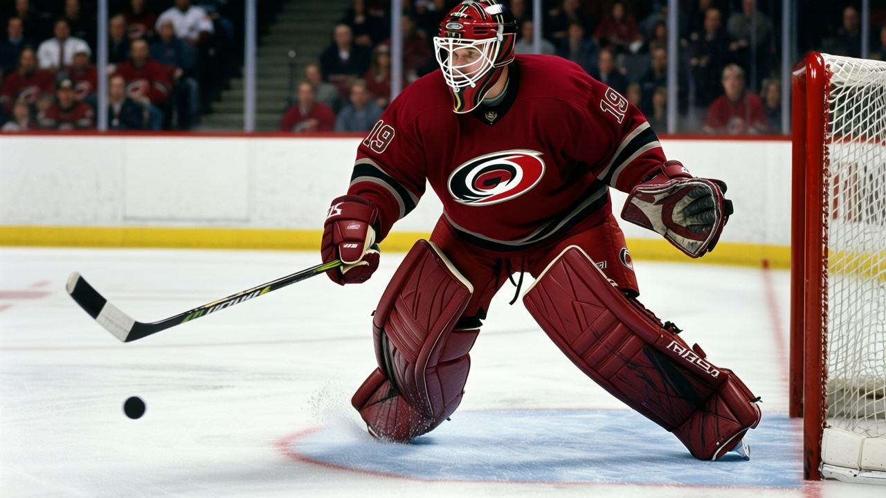
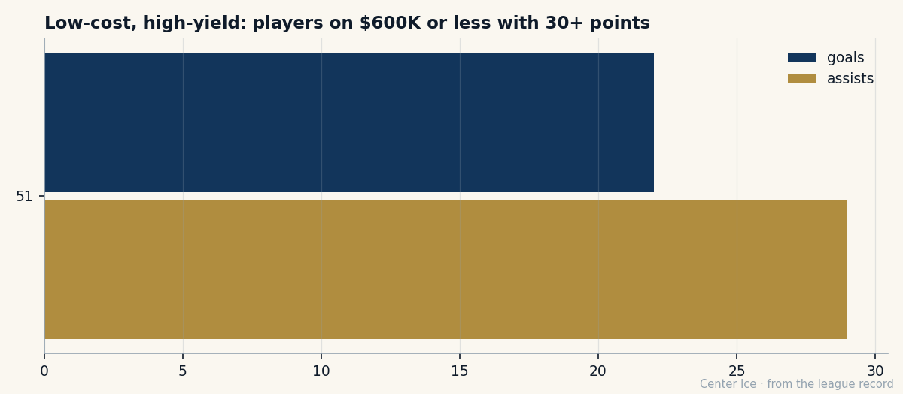

212th overall, first on the scoresheet: Radim Vrbata and the eighth-round life
Carolina's leading scorer makes $0.40M, grades 79, and shoots a 91 shot power. The team is 14-7-7 without its captain.
 Carol BinghamFeatures writer · Rinkside
Carol BinghamFeatures writer · Rinkside Radim Vrbata79 is the best player on the
Radim Vrbata79 is the best player on the  Carolina Hurricanes this season. He has 51 points in 35 games, a 119.5 pace, 21.1 minutes a night, and a contract that pays him $0.40M. The man drafted 212th overall in 1999, eighth round, by the
Carolina Hurricanes this season. He has 51 points in 35 games, a 119.5 pace, 21.1 minutes a night, and a contract that pays him $0.40M. The man drafted 212th overall in 1999, eighth round, by the  Colorado Avalanche Avalanche, is carrying a club that made the playoffs last year on the strength of a different roster entirely.
Colorado Avalanche Avalanche, is carrying a club that made the playoffs last year on the strength of a different roster entirely.

The Book has him at 79. His shot power grades 91, which is where the piece starts to make sense. The rest of his profile reads like a good player's: puck handling 87, accuracy 84, speed 83. But shot power at 91 is not a complementary attribute. It is what makes a second-line winger a first-line winger, what makes a goaltender step across a half beat early because he knows the release is coming from the circle and arriving fast. Vrbata has 22 goals in 35 games. That number is not a secret his own team can keep from next season's free-agent market.
He was born in Mlada Boleslav, Czech Republic, the same town as  Martin Havlat82. Havlat was a first-rounder from the start, a 26th-overall pick who was supposed to be good. Vrbata was the 212th pick, the last name on the Avalanche's 1999 board, a seventh-round selection (the sheet rounds this to 8, which is the Bureau's convention). His first NHL game came in February 2002, against the New York Islanders. He scored a night later. Then came the years between, the ones that do not make a season line.
Martin Havlat82. Havlat was a first-rounder from the start, a 26th-overall pick who was supposed to be good. Vrbata was the 212th pick, the last name on the Avalanche's 1999 board, a seventh-round selection (the sheet rounds this to 8, which is the Bureau's convention). His first NHL game came in February 2002, against the New York Islanders. He scored a night later. Then came the years between, the ones that do not make a season line.
What the 212th pick does with 21.1 minutes
Vrbata's 119.5 pace would place him 15th in the league. He is not 15th in the league. He is 21st on the scoring list with 51 points, but the games-played difference is doing the work. In 35 games, at 21.1 minutes a night, he is producing at the rate of a top-six winger on a contender. On a team that was 26-41 last season and missed the playoffs, that is the kind of number that changes what the front office thinks about next July.
The Book says 79. The potential grade says 82. The Development Index has him at zero, neither rising nor falling, which is the Bureau's way of saying: what you see is what the formula expected. There is no breakout here by the Index's standard. But the 119.5 pace is not what a 79 player does.
His shot power at 91 is the reason the grade might be wrong, or the reason the production might not last. A 91 shot power on a 79 overall means the shot is carrying more weight than the other attributes support. Puck handling at 87 says he can protect it. Speed at 83 says he is not a threat in open ice the way a Havlat or a Gaborik is. What he has is a release that beats goaltenders before they set, and the judgment to find the spot where it works.
Without the captain
 Rod Brind'Amour83 has been out since sometime before 2004-12-01 with a back injury, not due until 2005-01-22.
Rod Brind'Amour83 has been out since sometime before 2004-12-01 with a back injury, not due until 2005-01-22.  Sean Hill79's hip keeps him out until 2005-01-16. The center and the top defenseman, gone. The Carolina Hurricanes are 14-7-7 without them, on a three-game win streak, and Vrbata has 51 points.
Sean Hill79's hip keeps him out until 2005-01-16. The center and the top defenseman, gone. The Carolina Hurricanes are 14-7-7 without them, on a three-game win streak, and Vrbata has 51 points.
 Kevin Weekes88 in net has been the other half of this stretch: 18 wins in 28 games, a 3.19 GAA, .853 save percentage, two shutouts. He sits 2nd in the league in wins, behind only
Kevin Weekes88 in net has been the other half of this stretch: 18 wins in 28 games, a 3.19 GAA, .853 save percentage, two shutouts. He sits 2nd in the league in wins, behind only  Martin Brodeur93. But Weekes is a veteran who arrived with a pedigree; nobody is surprised he is good. Vrbata was the 212th pick. He was supposed to be a depth piece. The record opens on 2004-12-01 with him already in Carolina. He is here now, playing 21.1 minutes, and the scoresheet has his name at the top.
Martin Brodeur93. But Weekes is a veteran who arrived with a pedigree; nobody is surprised he is good. Vrbata was the 212th pick. He was supposed to be a depth piece. The record opens on 2004-12-01 with him already in Carolina. He is here now, playing 21.1 minutes, and the scoresheet has his name at the top.
The contract and the number behind it
$0.40M for a player producing at a 119.5 pace. Among the regulars making that salary or less, Vrbata's 51 points lead the group by 9. The next man at that salary is Ramzi Abid, 42 points on the same figure. When a team's leading scorer costs less than half a million and puts up a 119.5 pace, the front office has a problem it does not want to think about yet.
His morale is 92. He is happy. The contract has one year left. What happens in July is not the story tonight, but it is the story the front office is writing in the margins of every line sheet.
The 212th pick from Mlada Boleslav shoots a 91 shot and carries a team that nobody's covering. The Book says 79. The scoreboard says something else, and the scoreboard is the one that decides what he makes next summer.